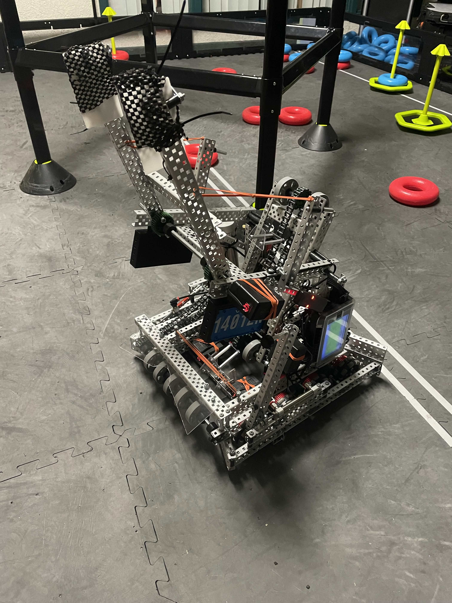
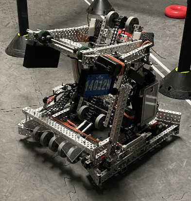
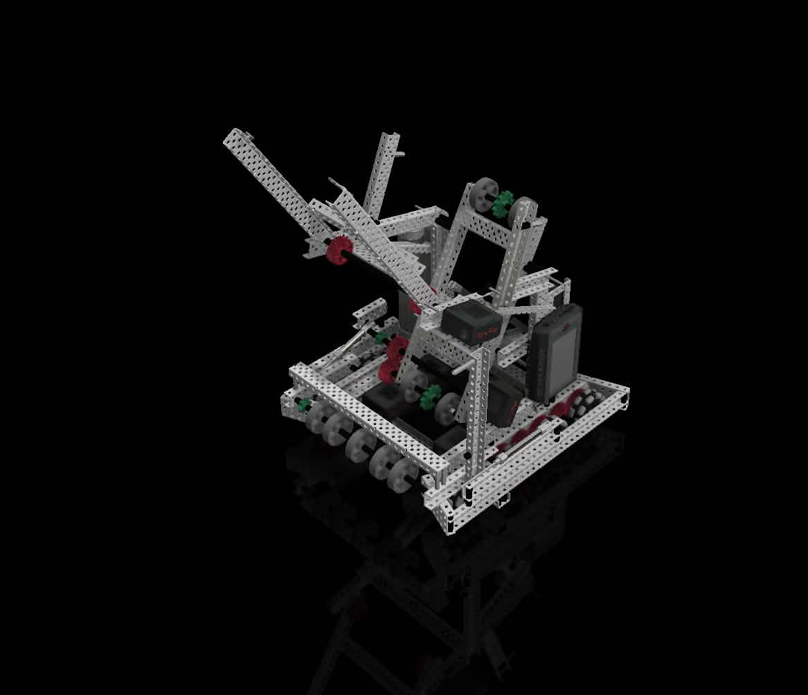
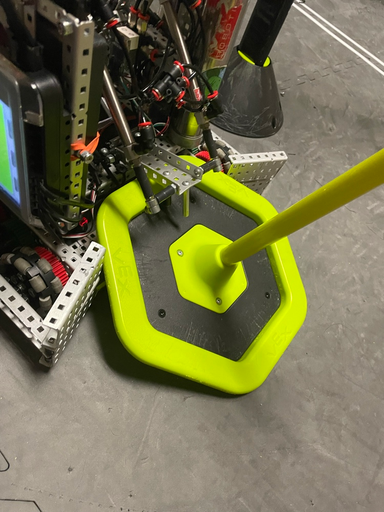
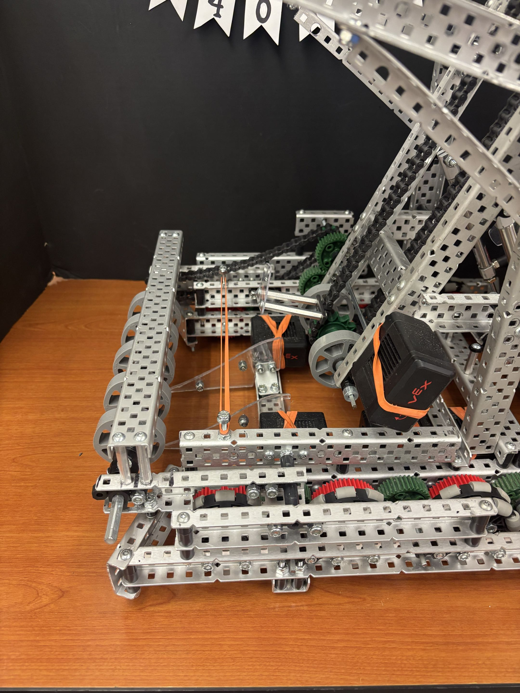
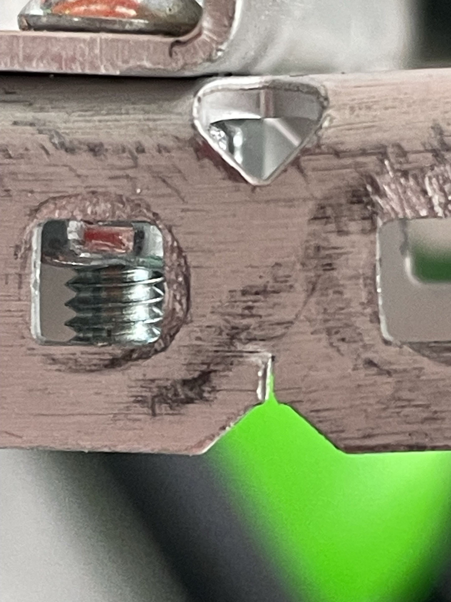
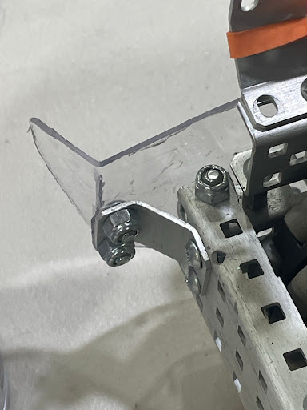
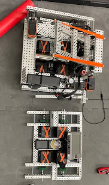

VEX Robotics Competition
Lead Design & Build Engineer | 9-Year Competitive Veteran, Technical Mentor & 4x World Qualifier
Project Overview & Leadership Experience
Brought 9 total years of competitive robotics experience spanning FIRST LEGO League (2 years), VEX IQ (3 years, 2x World Championship Qualifier), and VEX Robotics Competition (4 years, 2x World Championship Qualifier). As the Lead Design, Build, and Testing Engineer, oversaw physical fabrication, 3D CAD modeling, and field validation across the majority of my time in competitive robotics.
Resource Optimization & Fiscal Constraints
Operating under strict financial constraints required careful resource management, long-term fiscal planning, and creative problem solving to keep the team competitive with legacy hardware:
- Strict Annual Allocation: Managed a tight base budget of ~$1,000 per team annually, covering all registration fees, replacement hardware, and new component purchases.
- Post-Worlds Deficit Recovery: After paying the ~$1,800 registration fee for the 2023–2024 VEX World Championship from accumulated rollover savings, the team account was left with a remaining balance of just $4 entering the 2024–2025 season.
- Strategic Resource Allocation: Pursued external sponsors and coordinated with affiliated middle and elementary school teams holding surplus funds to help cover World Championship entry fees. Any additional new hardware required out-of-pocket funding, heavily constraining design choices.
- Design for Refurbishment: Prioritized non-destructive mechanical assembly methods whenever possible, enabling critical electronics, actuators, and structural channels to be salvaged and re-engineered across multiple seasons.
Software Architecture & Engineering Mentorship
Balanced hands-on software development with team mentorship to build reliable autonomous stacks and preserve program knowledge:
- 2023–2024 Lead Programmer: Created the entire PROS software architecture for Over Under, writing modular C++ subsystem libraries (
drive.cpp,catapult.cpp,intake.cpp) using direct voltage control and motor encoders for reliable autonomous routines. - 2024–2025 Mentorship: Onboarded an incoming team programmer with a Python background. To lower the learning curve under tight competition deadlines, deliberately streamlined the codebase into a single monolithic file (
main.cpp) while teaching C++, PROS, and LemLib to establish a Cartesian tracking system using odometry coordinates (X, Y, θ). - Managing Real-World Odometry Drift: Designed autonomous paths using PID correction and mechanical field resets (forcing the robot against fixed perimeter structures into a known pose) to compensate for wheel slip without perimeter vision/distance sensors.
2024–2025 High Stakes: Mechanical Design & Team Training
Responsible for full CAD design, physical build execution, and testing for Team 14012N, while actively mentoring team members in standard VEX fabrication techniques, testing methods, and software:
- Building & Testing Mentorship: Taught incoming team members proper framing, structural alignment, gear spacing, and systematic testing procedures to ensure physical reliability on the field.
- Pneumatic Mobile Goal Clamp: Designed and fabricated a rear clamping assembly powered by pneumatic cylinders to lock mobile goal bases firmly against the frame during fast pivot turns.
- Elevated Chain Conveyor Intake: Modeled and assembled a belt-driven chain intake using silicone flex wheels to pull rings off tile floors and score them onto goal stakes.
- 3D CAD Modeling: Developed complete 3D assembly models in Autodesk Inventor to lower overall weight, allow fast and effective field maneuvering, and verify frame stiffness prior to physical fabrication.

Final High Stakes Robot (Team 14012N) on Competition Field

Full Assembly 3D Model in Autodesk Inventor

Pneumatic MoGo Clamp Securing Goal Base

Elevated Chain Conveyor & Motor Gear Box Detail
2023–2024 Over Under: Iterative Builds, Failure Analysis & VEX Worlds
Led Team 14012H as Lead Designer, Lead Programmer, and Lead Tester through three complete mechanical iterations, diagnosing structural failures under competition stress:
- Stress Fracture Repair: Heavy repetitive launcher band tension combined with hard stop impacts fractured aluminum C-channel beams during competition. Diagnosed the fatigue points and reinforced the main structural frame geometry.
- Polycarbonate Material Failure: High-impact collisions snapped and bent Lexan flaps in half during match play. Extended the main base frame to provide direct structural support out to the edge of the polycarbonate flaps.
- Emergency World Championship Rebuild: Received late qualification notice just two weeks prior to the VEX Robotics World Championship in Dallas. With primary lab access restricted, executed a complete robot rebuild and simplification off-campus within a single week to ensure field readiness and reliability.

Final Competition Assembly at the VEX World Championship

Structural Fatigue Crack Formed in C-Channel from Band Tension & Impact Slamming

Bent Polycarbonate Piece

Build Progression: Early Heavy Prototype Chassis vs. Second Iteration